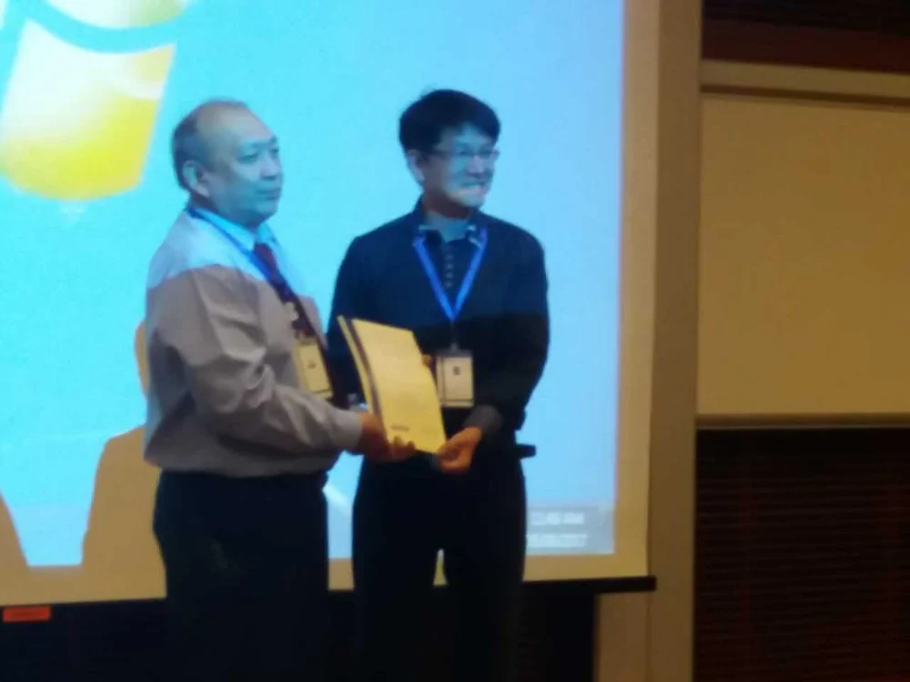

Prof. Jimmy Liu, Ningbo Institute of Industrial Technology, Chinese Academic of Science, China
Principle Scientist (Adj), Singapore National Eye Research Institute, Singapore
Speech Title: Digital Ocular Imaging Research
Abstract: In the talk, Jimmy will update the ocular imaging research work conducted with ophthalmologists from many counties in the past 10 years. He will share his intelligent image processing work on various ocular imaging modalities such as fundus, OCT (optical Coherence Tomography), OCT Angiogram on the following 4 areas: ocular disease screening, robot assisted eye micro-surgery, ocular biometrics, as well as ocular medical informatics using genome study. He will introduce the current issues, technologies and approaches in this inter-disciplinary research area. Jimmy will also share how ocular imaging research efforts are noticed by the cardiologists and dermatologists, which results in the expansion of the research to other medical imaging research area such as coronary vessel and skin medical image analysis using the technologies developed from the ocular imaging research.
Bio: Prof. Jimmy Liu Jiang joined Chinese Academy of Sciences in March 2016 though the China “Thousand Talent Program”. He graduated from the University of Science and Technology of China, and obtained his Master and Ph.D degrees from the National University of Singapore majoring in Computer Science. Jimmy is holding the Honorary Professor position from Dundee University, UK. and adjunct principle research scientist position in Singapore National Eye Research Institute. Jimmy has served many years in IEEE EMBS (Engineering in Medicine and Biology Society) society, and was the 2014 chairman of the IEEE EMBS society of Singapore.
Jimmy has spent 27 years in Singapore before 2016. He had worked for 14 years in Multi-National Corporations and Government linked enterprises as well as a start-up. His experiences included working as programmer, assistant engineer, engineer, product manager, R&D head and company director. To fulfill his interest in medical imaging, he joined academy in 2004. Jimmy established the Intelligent Medical Imaging Program (iMED), which is the largest ocular imaging research team in the world, in A*STAR (Agency for Science, Technology and Research) Singapore. He was also the PIs and Co-PIs of 18 National academic research competitive grants, totaling 22Million Singapore Dollar (about 17Million US dollars). He had published more than 200 international peer reviewed academic papers including thise in JAMIA, IEEE TMI, CVPR, MICCAI, etc. Jimmy had more than 40 patents and some of them had been licensed to international and Singapore enterprises. To ensure long-term collaboration and technology licensing, in 2013, Jimmy established an industrial oriented joint laboratory ATLANTIA (Advanced Technology Laboratory for A*STAR and TOPCON Innovative Alliance) with world leading ophthalmological equipment manufacture TOPCON Inc. Jimmy also paid close attention to the collaboration with clinicians. He established another joint laboratory AVATA (Advanced Vision and Technology Alliance) between A*STAR and the Singapore National Healthcare Group (NHG) in 2013.
Ever Since his joining Chinese Academy of Sciences, he spent his efforts helping to establish a new institute focusing on biomedical Engineering in Ningbo with supports from government and Chinese Academy of Sciences. In June 2016, he established an international joint lab “Sino-US Eye-Brain joint research lab” with North Carolina University United States to conduct eye and brain diseases diagnosis research; in August 2016, he established a joint lab with Electronics University of China to conduct big medical image data analytics. In Feb 2017, he signed a MOU with Singapore Eye Research Institute to jointly conduct ocular imaging research, and in April 2017, he signed an agreement with Singapore National Health Group in Ningbo with Dr. Lim Tock Han (Deputy Group CEO of National Health Group) to jointly conduct medical technology research as well as explore translational and clinical research in China and Singapore. Recently, in May 2017, Jimmy established a new joint laboratory with world leading ophthalmological equipment manufacture TOPCON Inc. in China focusing on new areas such as advanced ocular medical equipment manufacturing and Artificial Intelligence based Chinese big medical image and data research.